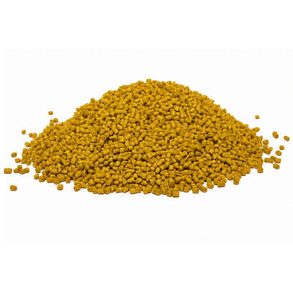

Ração afundante para cascudos e outros peixes de fundo onívoros

A ração afundante para peixes de fundo é um alimento completo e balanceado, ideal para cascudos, carpas koi, kinguios e outros peixes ornamentais de todos os portes. Desenvolvida para espécies herbívoras e onívoras, oferece nutrição de alta qualidade e excelente aceitação.
Com fórmula à base de vegetais, krill e algas, e formato em sticks afundantes, garante alimentação eficiente no fundo do aquário sem comprometer a qualidade da água quando utilizada corretamente.
Benefícios
- Alimento afundante ideal para peixes de fundo
- Com vegetais, krill e algas
- Auxilia na nutrição equilibrada
- Não se dissolve rapidamente
- Não prejudica a qualidade da água
- Alta aceitação pelos peixes
Espécies Indicadas
- Cascudos (plecos em geral)
- Carpas Koi (Nishikigoi)
- Kinguios
- Ciclídeos
- Outros peixes de fundo e Pequeno/médio/grande porte
Mix Campo, ração Mix Campo, produtos Mix Campo, alimentação para peixes Mix Campo